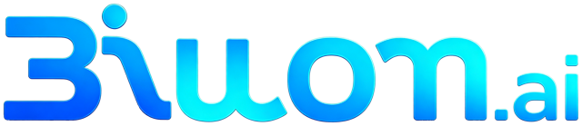
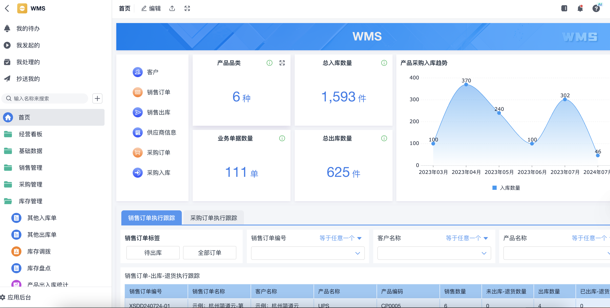
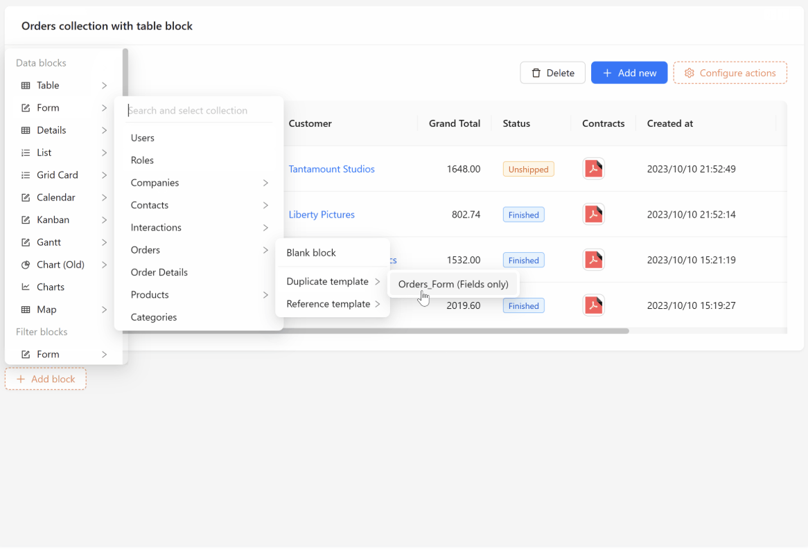
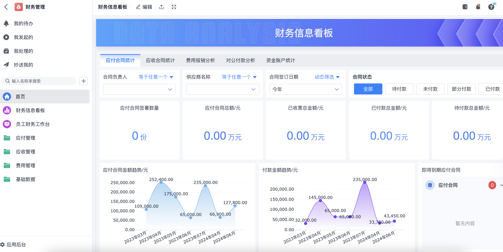
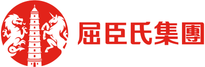
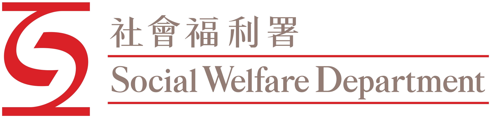
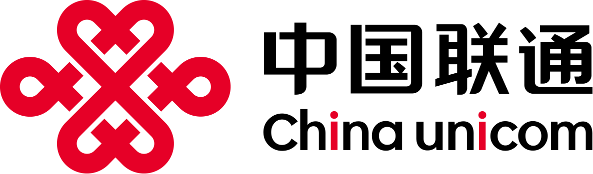

AI Agent 智能体
把“问答机器人”升级成可拆解目标、调用工具、跨系统执行并自我调整的数字员工。

3iwom.ai3iwom IT Co., Limited 自 2012 年起深耕数字科技行业，核心团队来自 Siemens、HSBC、 PCCW、Country Garden 等大型企业。现在我们把多年企业系统交付、低代码平台与 AI Agent 方案整合，服务企业智能化升级。
把“问答机器人”升级成可拆解目标、调用工具、跨系统执行并自我调整的数字员工。
以数据模型驱动业务应用，80% 需求由配置实现，20% 通过插件扩展开发。
覆盖咨询、系统集成、定制开发、外包团队与运维，适配房地产、零售、制造、医药与教育等行业。
AI Agent 能处理传统自动化难以覆盖的多步骤、跨系统、不确定性任务。它理解目标， 自动规划步骤，连接 CRM、ERP、数据库、网页与内部工具，持续根据执行结果修正策略。
将“调研竞对”“生成经营周报”等复杂任务拆解为可执行步骤。
连接业务系统、数据库、API、邮件、知识库和报表工具。
根据执行结果自检、重试、补充信息，直到完成目标或交由人工确认。
响应从小时级缩短到秒级，人工专注复杂客诉与服务体验。
自动收集竞品、市场与渠道信息，团队把时间投入判断和决策。
辅助代码审查、Bug 定位、接口文档生成和知识库维护。
业务人员自然语言提问，Agent 自动写 SQL、出图表、给结论。
NexaCo 基于 NocoBase 体系与主流技术栈构建，采用 TypeScript、Node.js、React、Koa 等技术。它不是封闭黑盒，而是可部署、可扩展、可监控的企业应用基础设施。

数据结构与用户界面分离，同一张表可以创建多种页面、区块和操作。
页面、区块、操作、API、数据源均可通过插件扩展，应对复杂业务变化。
支持主数据库、外部数据库、第三方 API、SSO、多应用与父子应用集成。
日志、监控、OpenTelemetry 与 Prometheus 能力帮助企业掌控运行状态。
选择高价值、可控、数据可获得的业务场景，建立人工复核机制。
接入 API、数据库和内部系统，配置 Agent 逻辑，核心场景自动化率达 60%。
小范围运行，持续调优准确率、响应速度、安全边界和人工协同流程。
团队规模不变，处理量翻倍，让智能体成为部门日常生产力。
我们把 NexaCo 的平台能力与行业 Know-how 组合，为企业快速构建内部系统、数据分析、 流程审批、移动端与微信应用，并叠加 AI Agent 自动化能力。
应收应付、合同、报销、发票、审批与数据分析。
产品、客户、线索、商机、订单合同、绩效与财务集成。
员工档案、考勤、招聘、入转调离、薪酬、绩效与组织架构。
体系、风险、合规、应急、事故与运营管理。
排产、文档、质量、工时、资源、库存、生产监控与分析。
库存、订单、库位空间、人员、供应商与商品管理。


团队长期服务房地产、零售、制造、金融、公共机构及大型集团客户，具备从咨询到开发、 集成、运维的完整交付能力。



我们会基于真实业务流程，评估数据接入、自动化收益、安全边界与落地路径， 并在 3 个工作日内输出试点场景评估建议。